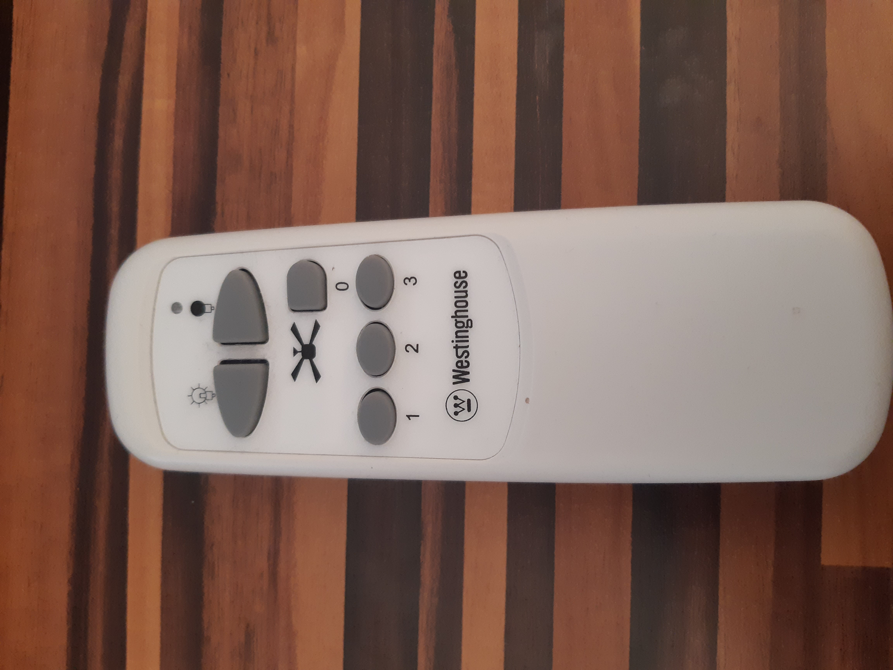
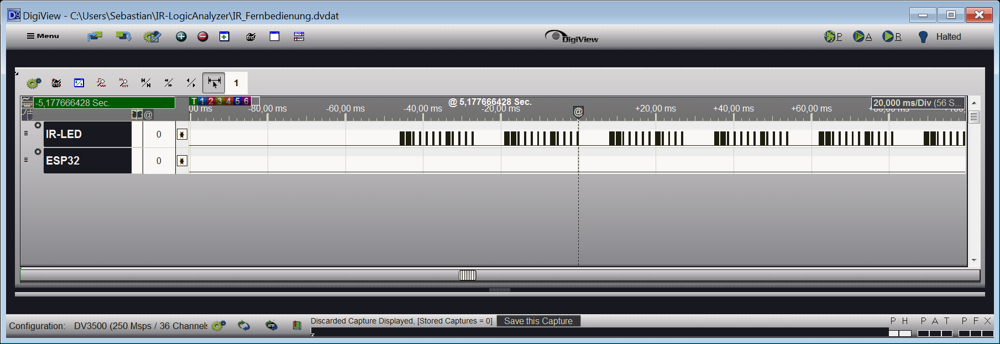
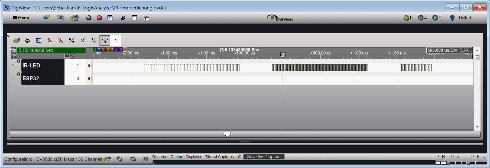
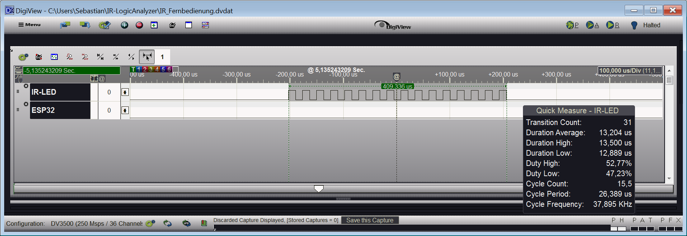
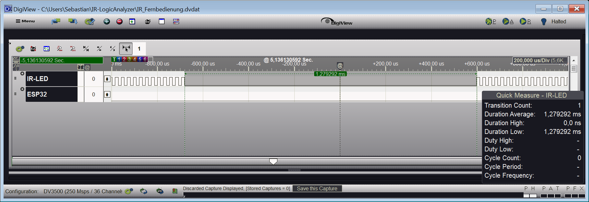
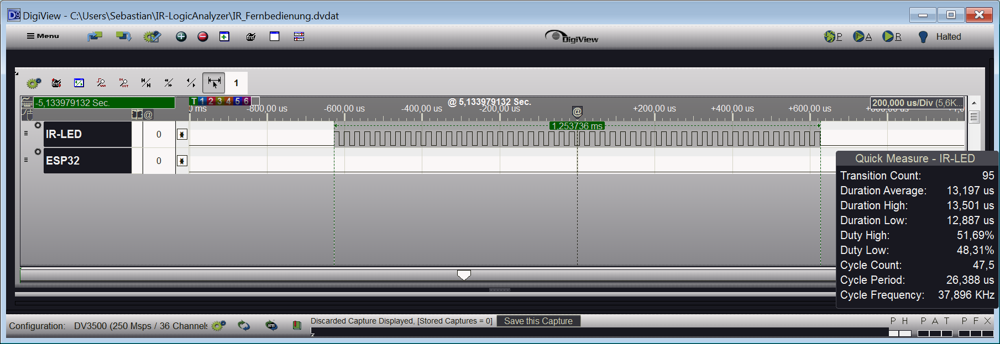
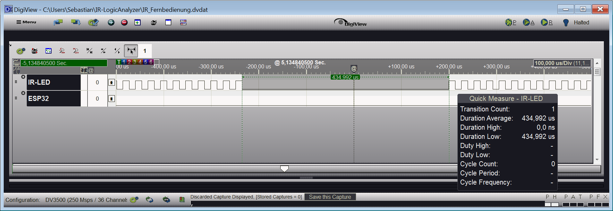

Goal of the whole project
I got ceiling fan which is controlled by an IR-remote control, and I want to be able to control it using my home automation system based on OpenHAB.
So my basic idea is to use an external IR-led connected to an controller, that is controllable over MQTT.
From previous projects I got an ESP32 Devkit left, which I will use as controller.
But the first post will just be about "Analyzing the IR Signal"
Hardware used
- LogicAnalyzer
- I'm using a DV3500 which i got from my company for a previous project.
- IR-Remote Control
- The IR-Control which was delivered with the ceiling fan.
Getting Started
- I disassembled the IR remote control and connected the LogicAnalyzer to the IR-LED
- Setup a small project in the LogicAnalyzer software to record the power signal of the IR-LED
Looking at the powersignal
I enabled capturing in the LogicAnalyzer and pressed a key on the IR.
Zooming in a little bit more.
Looking at the capture of the IR-LED power signal, it seams that the IR-LED is triggered with series of pulses. A longer series and a shorter series.
Capturing all Signals from Remote Control
I renabled capturing in the LogicAnalyzer and pressed a few other buttons.
Looking at those capturings it showed the same, longer and shorter series of pulses. But just arranged in another order. But for every button there are exactly 12 series.
It's remarkable that every button press starts with two longer series of pulses.
At this point I will name the longer series of pulses: "long pulse" and the shorter series "short pulse"
I capture the power signal for all buttons on the IR remote control and created a table of the pulse combinations.
x = Long pulse
0 = Short Pulse
Table of capture signal
| Key | 1 | 2 | 3 | 4 | 5 | 6 | 7 | 8 | 9 | 10 | 11 | 12 |
|---|---|---|---|---|---|---|---|---|---|---|---|---|
| Light ON | x | x | o | o | o | o | o | o | x | o | o | o |
| Light OFF | x | x | o | o | o | o | x | o | o | o | o | o |
| FAN OFF | x | x | o | o | o | o | o | x | o | o | o | o |
| FAN LVL1 | x | x | o | o | o | o | o | o | o | o | o | x |
| FAN LVL2 | x | x | o | o | o | o | o | o | o | x | o | o |
| FAN LVL3 | x | x | o | o | o | x | o | o | o | o | x | x |
A closer look to pulse sequences
Short pulse
Looking at the pulses
Looking at the break after the pulses
The short pulse consists of:
- 31 transistions
- ~ 13.5 us (microseconds) in high state
- ~ 12.87 us (microseconds) in low state
- a break of ~1,37 ms (milliseconds)
Long pulse
Looking at the pulses
Looking at the break after the pulses
The long pulse consists of:
- 95 transistions
- ~ 13.5 us (microseconds) in high state
- ~ 12.87 us (microseconds) in low state
Conclusion
We got now everything we need to rebuild the signals of the IR remote control.
- We know how the different pulses look like
- We know which pulse type (long pulse / short pulse) we need to trigger for each of the Buttons of the IR remote control.
I also think the actual high state is a little shorter then the period showed by the LogicAnalyzer because an 100uF capcitors is connected in series to IR led. (See picture at Getting Started)
In next blog post, will we see how to generate the signals we have reverse engineered from a controler.